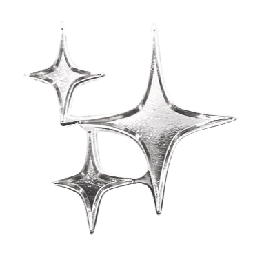

ABOUT THE ISLAND
Techy Stuff:
Credits:
- Layout template is from petrapixel's template generator
- Body font is RainyHearts
- Display font is Summer Pixel 22
- Icons are from the following sources:
- External link icon by Rahul Kaklotar
- Rating stars from Hillhouse
- Purple bullet icon by dokode
- Bullets for my about me page by gasara on deviantart
- Other bullets from foollovers
My vision for the island:
I've read a few manifestos created to explain the purpose of someone's website, which inspired not only this page but a bit of contemplation. To be very transparent, I was reminded that personal websites still exist from a YouTube video and fell down the rabbit hole with Neocities. I grew up playing with website-building through myspace and similar websites as a kid. For my own site, I knew I might share some writings but that was about all I could think of.
 Honestly, it's good enough if that's all I do with this thing. I don't have many things that archive or document my life, however, so I'm curious to see how I might do that with a website as well. Ultimately, as a personal website, I'm always adding and tweaking things, so consider the island perpetually growing.
Honestly, it's good enough if that's all I do with this thing. I don't have many things that archive or document my life, however, so I'm curious to see how I might do that with a website as well. Ultimately, as a personal website, I'm always adding and tweaking things, so consider the island perpetually growing.
With that said, I have a few key points of note:
- Unless my site is taken down by the host, I intend to keep this site up indefinitely.
- This is never meant to feel like "work." This is a labor of love and a way to feed my creative spark. Things might not be super polished and fancy with animations, and that's okay.
- This island is for me first. I want things to be as accessible as possible, but I see this island as a creative expression of myself.
Last updated: 7 April 2026.
